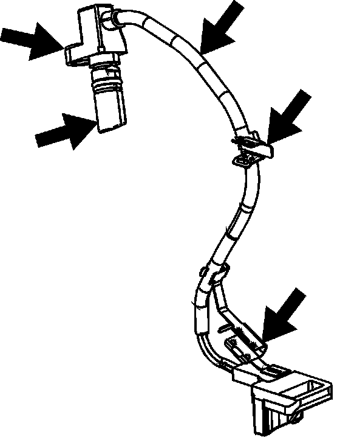
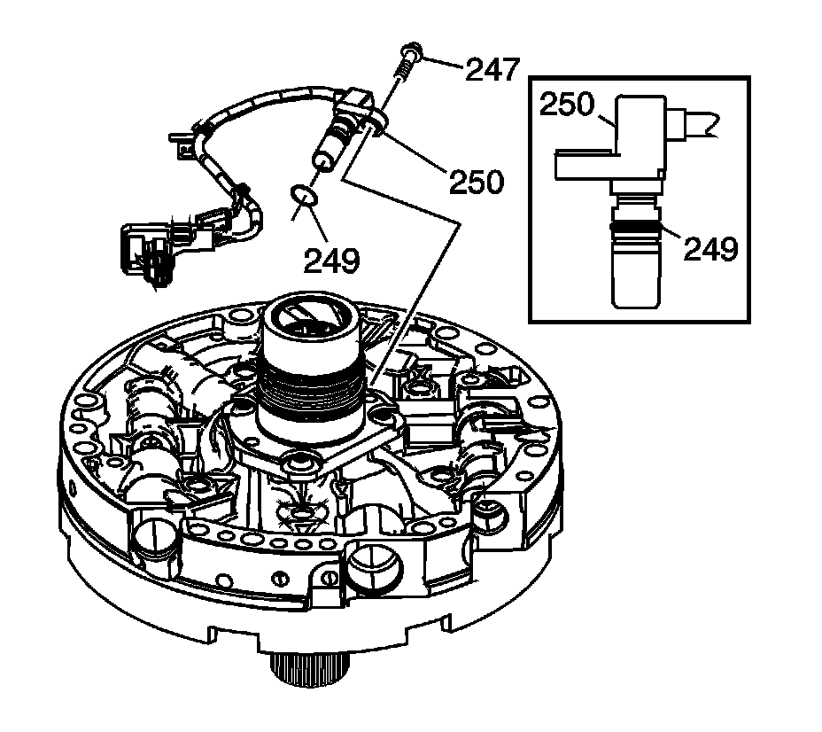
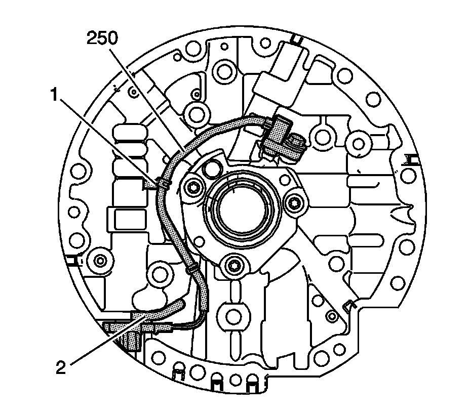

Input Speed Sensor Installation
Input Speed Sensor Installation

1. Inspect the input speed sensor (ISS) assembly (250) for the following conditions:
^ Cracked or damaged housing
^ Worn, broken or missing harness brackets; replace the ISS assembly if necessary
^ Damaged or worn wining or electrical connector
^ Loose, missing or damaged mounting bolt insert

2. Remove the ISS O-ring (249) and discard.
3. Lubricate NEW O-ring (249) with transmission fluid and position the O-ring as shown.
4. Insert the ISS (250) into oil pump ISS bore and fully seat.
5. Align ISS bolt hole insert with the oil pump mounting hole.
Notice: Refer to Fastener Notice.
6. Install bolt (247).
Tighten the bolt to 9-11 N.m (6.6-8.1 lb ft).

Important: Ensure the ISS brackets securely fasten the wiring harness to the pump housing.
7. Route the ISS assembly (250) wire harness as shown. Install harness bracket #1 and #2 in the locations shown. Ensure the wire harness lays flat against the pump housing.